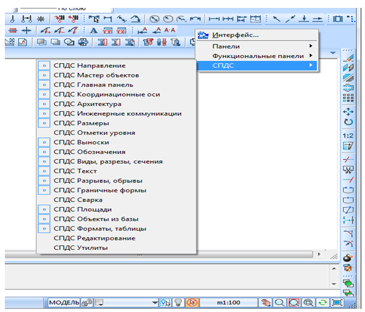
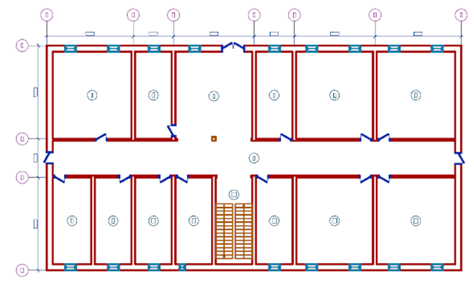
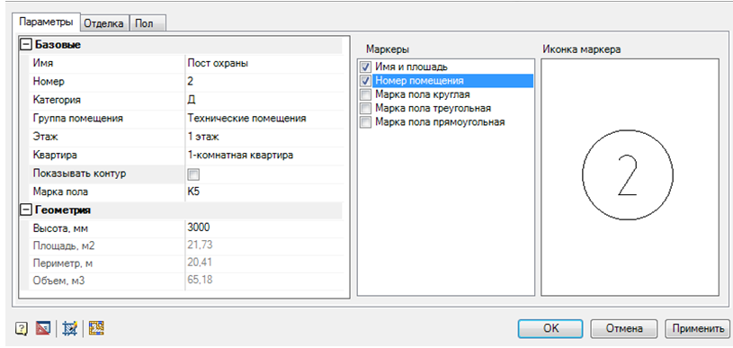
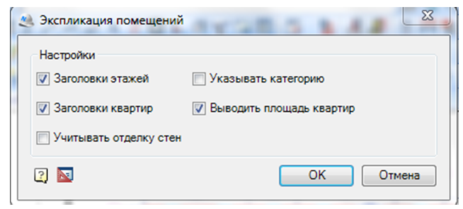
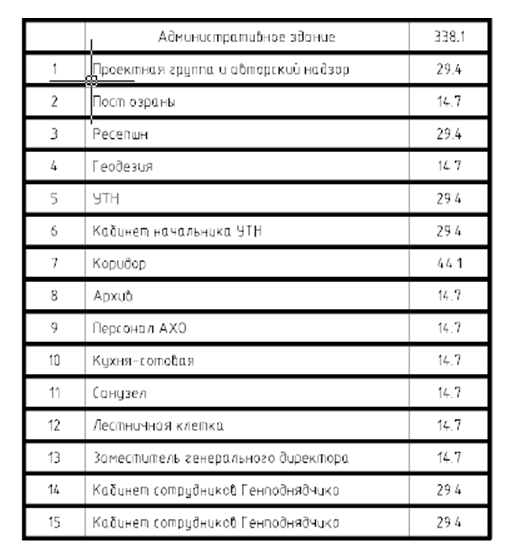
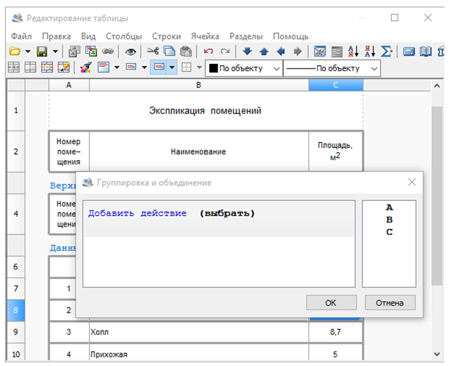
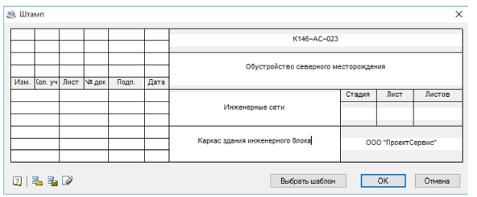

Цели работы:
1. Изучить базовые принципы построения различных систем безопасности и СКУД с помощью САПР «NanoCAD».
2. Изучить правила и нормы оформления технической документации к проекту.
3. Изучить САПР NanoCAD СПДС (Система проектирования документации для строительства) и NanoCAD ОПС (Охранно-пожарная сигнализация).
Теоретические сведения:
Система автоматизированного проектирования (САПР) – это организационно-техническая система, состоящая из совокупности комплексов средств автоматизации проектирования и коллектива специалистов подразделений проектной организации, выполняющая автоматизированное проектирование объекта, которое является результатом деятельности проектной организации.
Цели создания и задачи
В рамках жизненного цикла промышленных изделий САПР решает задачи автоматизации работ на стадиях проектирования и подготовки производства.
Основная цель создания САПР – повышение эффективности труда инженеров, включая:
• сокращения трудоёмкости проектирования и планирования;
• сокращения сроков проектирования;
• сокращения себестоимости проектирования и изготовления, уменьшение затрат на эксплуатацию;
• повышения качества и технико-экономического уровня результатов проектирования;
• сокращения затрат на натурное моделирование и испытания.
Достижение этих целей обеспечивается путем:
• автоматизации оформления документации;
• информационной поддержки и автоматизации процесса принятия решений;
• использования технологий параллельного проектирования;
• унификации проектных решений и процессов проектирования;
• повторного использования проектных решений, данных и наработок;
• стратегического проектирования;
• замены натурных испытаний и макетирования математическим моделированием;
• повышения качества управления проектированием;
• применения методов вариантного проектирования и оптимизации.
Описание системы автоматизированного проектирования «NanoCAD».
NanoCAD — базовая система автоматизированного проектирования, предназначенная для разработки и выпуска рабочей документации (чертежей). Обладает AutoCAD-подобным интерфейсом и напрямую поддерживает формат DWG. Относится к классу САПР-платформ, так как на базе NanoCAD могут создаваться специализированные приложения для выполнения различных узкоспециализированных проектных задач.
Для проектирования зданий, помещений и оформления технической документации предназначен NanoCAD СПДС. Возможности данного САПРа позволяют сократить время на выполнение проекта. NanoCAD СПДС обладает дополнительными панелями интерфейса СПДС, представленные на рисунке 1.

Рисунок 1 – Панели интерфейса СПДС
Основной панелью, которой пользуются при проектировании объекта является панель СПДС Архитектура, содержащая основные команды для проектирования здания и создания документации (стена, окно, дверь, колонна, объекты плана, лестницы, помещение, экспликация помещений), представлена на рисунке 2.
Рисунок 2 – Панель интерфейса СПДС Архитектура
Проектирование объекта в NanoCAD СПДС схоже с Microsoft Visual Studio, используя знакомые нам команды.
Все элементы оформления и настройки программы строго соответствуют стандартам, представленным в следующих нормативных документах:
• ГОСТ Р 21.1101-2013 «СПДС. Основные требования к проектной и рабочей документации»;
• ГОСТ 21.501-2011 «СПДС. Правила выполнения архитектурно-строительных рабочих чертежей»;
• ГОСТ 2.301-68 «ЕСКД. Форматы»;
• ГОСТ 2.302-68 «ЕСКД. Масштабы»;
• ГОСТ 2.302-96 «Условные графические обозначения в документации по инженерно-геологическим изысканиям»;
• ГОСТ 2.303-68 «ЕСКД. Линии»;
• ГОСТ 2.304-81 «ЕСКД. Шрифты чертежные»;
• ГОСТ 2.305-2008 «ЕСКД. Изображения – виды, разрезы, сечения»;
• ГОСТ 2.306-68 «ЕСКД. Обозначения графические материалов и правила их нанесения на чертежах»;
• ГОСТ 2.307-2011 «ЕСКД. Нанесение размеров и предельных отклонений»;
• ГОСТ 2.316-2008 «ЕСКД. Правила нанесения на чертежах надписей, технических требований и таблиц»;
• ГОСТ 2.312-72 «ЕСКД. Условные изображения и обозначения швов сварных соединений»;
• ГОСТ 2.313-82 «ЕСКД. Условные изображения и обозначения неразъемных соединений»;
• ГОСТ 5264-80 «Ручная дуговая сварка. Соединения сварные. Основные типы, конструктивные элементы и размеры»;
• ГОСТ 2.104-2006 «ЕСКД. Основные надписи»;
• ГОСТ 2.106-96 «ЕСКД. Текстовые документы».
Модуль «Архитектура» предоставляет возможность вычерчивать поэтажные планы с применением специальных инструментов и объектов (рисунок 3). Основные инструменты и возможности модуля:
• линейные и дуговые сегменты при построении стен;
• настройка шаблонов стен – геометрии построения, толщины и состава материалов, штриховки, порядка построения и приоритета слоев и т.д.;
• инструменты редактирования стен;
• вставка оконных и дверных проемов из базы данных;
• простановка помещений на плане, описание помещения и отделки;
• формирование экспликации помещения и ведомости отделки помещения;
• нанесение объектов интерьера.

Рисунок 3 – Пример плана, выполненного в модуле «Архитектура»
Выполнение экспликации помещений:
1. Выбираем команду «помещение» в модуле «Архитектура» и нажимаем курсором в любую точку нужного нам помещения (контур комнаты должен быть замкнут). В всплывающем окне во вкладке параметры заполняем нужные нам поля, например, имя, номер, категория, и устанавливаем птичку в маркерах на номер помещения (рисунок 4). В зависимости от наших целей можем заполнить поля во вкладках отделка и пол.

Рисунок 4 – Пример заполнения окна команды «Помещение»
2. Выполнив теже действия для всех помещений переходим к следующей команде «Экспликация помещений». Выбрав данную команду обводим мышью весь объект и нажимаем кнопку Enter. Во вспомагательном окне выбираем нужные пункты (рисунок 5). Далее на экран выводится заполненная таблица экспликации ( рисунок 6). Редактировать полученную таблицу экспликации помещений можно после 2-ого нажатия по ней в вспомогательном окне (рисунок 7).

Рисунок 5 – Пример заполнения вспомогательного окна команды «Экспликация помещений»

Рисунок 6 – Пример результата команды «Экспликация помещений»

Рисунок 7 – Редактор таблиц
В программе содержатся готовые шаблоны наиболее распространенных табличных форм и стандартных форматок чертежей (рисунок 8). Все форматки полностью стандартизованы. Кроме того, всегда есть возможность создать собственную форматку и штамп – например, с заполненными сведениями о компании (редактор активируется 2-ым нажатием мыши по штампу).

Рисунок 8 – Диолог заполнения штампа чертежа
Порядок выполнения работы:
1. Изучить САПР «NanoCAD».
2. При помощи САПР «NanoCAD» произвести создание чертежа плана этажа здания согласно варианту. К зданию приложить экспликацию помещений с указанием площади.
3. Определить тип защищаемого помещения, категорию защищаемого помещения.
4. Определить отдельные помещения для защиты.
5. Оформить выходной документ – чертеж здания с экспликацией помещений.
Содержание отчета:
1. Титульный лист.
2. Цель работы.
3. Вариант задания.
4. Ход работы с пояснениями.
5. Чертеж здания с экспликацией помещений.
6. Выводы по работе.
Контрольные вопросы:
1. Что такое САПР?
2. Основные цели и задачи САПР?
3. По каким критериям можно классифицировать САПР?
4. Классифицируйте САПР по целевому назначению.
5. Что такое NanoCAD, с какими САПРами он схож?
6. Какие еще программы «серии» NanoCAD вы знаете, кроме СПДС и ОСП?
7. Какие преимущества и недостатки вы для себя выделили в NanoCAD СПДС?
8. Назовите основные панели интерфейса характерные только для NanoCAD СПДС?
9. Какими основными командами вы пользовались при выполнении лабораторной работы?
10. Чем, на ваш взгляд, NanoCAD СПДС уступает AutoCAD и другим САПРам и почему?